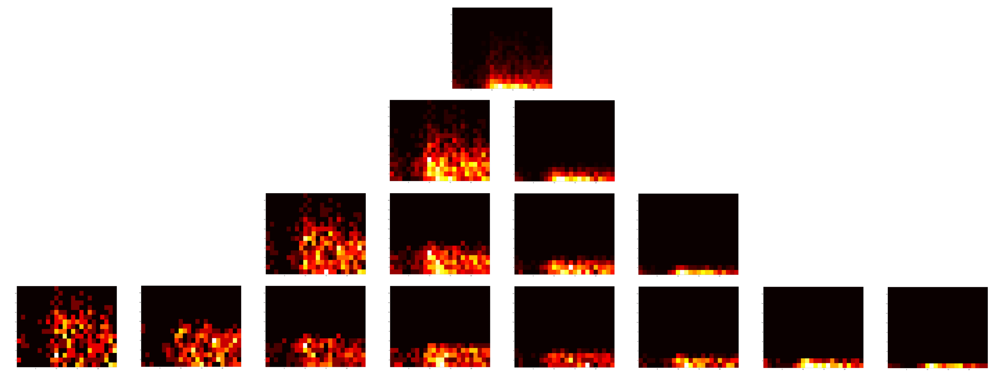

Welcome! This is a work in progress. Please navigate using the tabs above.
What I Do
I currently work as an Analytics Research Engineer at Netuitive in Reston, VA.:
- Design and develop predictive models and algorithms for noisy time series analysis.
- Rapid application prototyping (front-end, back-end, APIs, RDBMS, NoSQL).
What I Can Do
Math-ish-y:
- Machine learning and statistical methods.
- Non-linear optimization and solving.
- Numerical methods and complexity analysis.
- Non-deterministic/noisy systems.
- High performance and parallel computing.
Dev-ish-y:
- Big data. (There, I said it!)
- Data-centric architecture design and deployment.
- End-to-end application design and development.
- Visualization and UX.
What I Like To Do
- Do wizard magic and tell you lots of actionable things about your data.
- Design an application architecture with your data in mind.
- Build a back end using an appropriate data store.
- Build an API to meet your data serving needs.
- Create a client to help you interact and visualize your data.
- This web page on github.
- HashMeat. The product of Data Community DC's contingent at Hack//Meat, a hackathon of meat. Blog post about HashMeat.
- DSDC Visualization Contest 2012
Data Science DC Visualization Contest 2012 Entry: DSDC Members' Nth-Reply Hour-of-Day Density for M-Quantile Descending Total Attendance
The image below is the entry. In summary, we are visualizing the hour-of-day of a member's Nth reply partitioned into quantiles based on descending total attendence by member.
For each plot:
- The horizontal axis is a tally of the time, binned by hour, starting at midnight and ending at midnight. The time represents the hour of day when the DSDC member replied to the meetup invitation. There are 24 horizontal bins.
- The vertical axis represents (in chronological order) a tally of the Nth reply. I.e., if a member's first meetup reply was for the 5th meetup at noon and the second reply was for the 7th meetup and was also at noon, this data is tallied in the bottom-most and first up from the bottom bins around the horizontal midpoint, representing a first and second reply. There are 17 vertical bins. Only one person had a 17th reply, which implies one person had perfect attendance.
As a whole:
- The first row represents the total Nth reply hour-of-day density.
- Each successive row partitions the data into M (where M = 1, 2, 4, and 8 for the 1st, 2nd, 3rd, and 4th rows, respectively) quantiles by total member attendance, first sorted in descending order of meetups attended.
- The quantile for each row is the number of columns (plots per row), where the left-most plot is the top quantile.
- This means that the first (left-most) plot of the 2-quantile row contains the hour-of-day Nth reply density for the upper %50 of members by total attendance count.
- For example, the last (right-most) plot of the 8-quantile row represents the bottom %12.5 of all members by the total meetups they have replied to.

{kind=link}
Sure Octavian, that's nice, but why?
I believe the following:- For a given attendance record (or newness to the group), one can observe the trend that the subsequent replies take in terms of the hour of day when the member will reply to the invite. This can be useful when trying to infer which times are best to send an invitation email or target low-attendance users.
- From observing the 8-quantile plots, one can see that the members with the best attendance (left-most plot) seem to scatter the replies throughout the day. We are not too concerned with this group, as they are the officers and regulars of the meetup; they will attend with high probability. However, looking at the bottom five 8-quantiles, we begin to observe hot spots of replies centered around a particular hour of the day. Perhaps this data is actionable!
- In conclusion, there could be value in ths visualization for tracking trends of member reply times partitioned by how "regular" they are to the meetup. More data are needed!